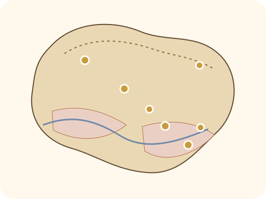

Research · Conservation · Education
The Official Scientific Home of Kurdistan Botanists
A professional platform for documenting flora, supporting field research, organizing scientific activities, and connecting botanists across Kurdistan.
0 flora records0 field projects0 scientific partners
Geography and plant zones
Mountains, valleys and plains create a living botanical laboratory
The Region is shaped by Zagros mountain systems, rugged northern and northeastern highlands, fertile valleys, and southern plains. This variety of elevation, rainfall and habitat supports oak woodlands, steppe vegetation, wild herbs and useful plants.
جوگرافیا و زۆنە ڕووەکییەکان
چیا، دۆڵ و دەشتەکان تاقیگەیەکی زیندووی ڕووەکن
هەرێمی کوردستان بە چیاکانی Zagros، بەرزاییە سەختەکانی باکوور و باکوور-ڕۆژهەڵات، دۆڵە بە پیتەکان و دەشتەکانی باشوور ناسراوە. ئەم جیاوازییەی بەرزی، باران و ژینگە، دارستانی بەڕوو، گیاکانی steppe و زۆر ڕووەکی بەسوود پێ گەشە دەدات.
الجغرافيا والمناطق النباتية
الجبال والوديان والسهول تصنع مختبراً نباتياً حياً
تتشكل المنطقة من أنظمة جبال زاغروس والمرتفعات الشمالية والشمالية الشرقية الوعرة والوديان الخصبة والسهول الجنوبية. هذا التنوع في الارتفاع والأمطار والموائل يدعم غابات البلوط ونباتات السهوب والنباتات البرية المفيدة.

Illustrative ecology diagram for plant zones.
About the association
A platform for science, nature, and Kurdistan’s greener future
The Kurdistan Botanists Association is a professional platform for botanists, ecologists, educators, students, and volunteers. Its mission is to build reliable knowledge, strengthen field research, and support the protection of natural habitats.
Programs and services
A complete digital system for the association
Flora Atlas
Scientific names, Kurdish names, locations, images, and conservation status.
Digital Herbarium
Specimen archive with collection number, date, region, and reference notes.
Environmental Reports
Data-based reports and recommendations for institutions and partners.
Courses and Workshops
Plant identification, field photography, GIS, and scientific writing.
Flora database
Search and filter plant species
This is sample data and can later be replaced with verified association records.
Events
Scientific and field activities
First Kurdistan Botany Conference
Talks, posters, panels, and presentation of the Flora Atlas initiative.
Mountain field expedition
Recording photos, GPS points, and educational field samples.
Mobile plant identification workshop
Practical training on photography, metadata, and field reporting.
Membership
Join Kurdistan’s professional network of botanists
The form prepares an email message. A backend or Google Sheet integration can be added later.
- Scientific member
- Student member
- Volunteer and nature friend
Contact